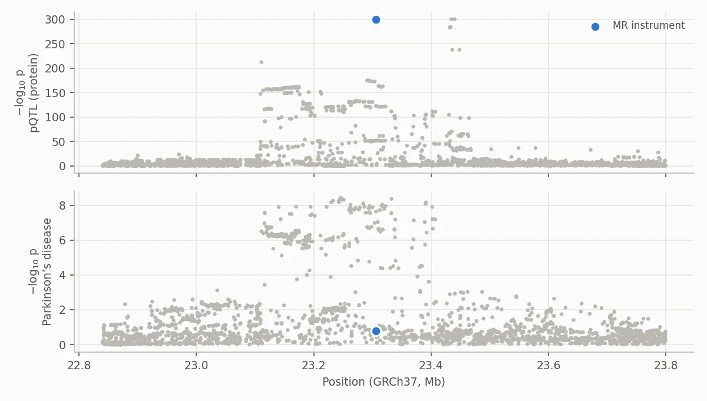
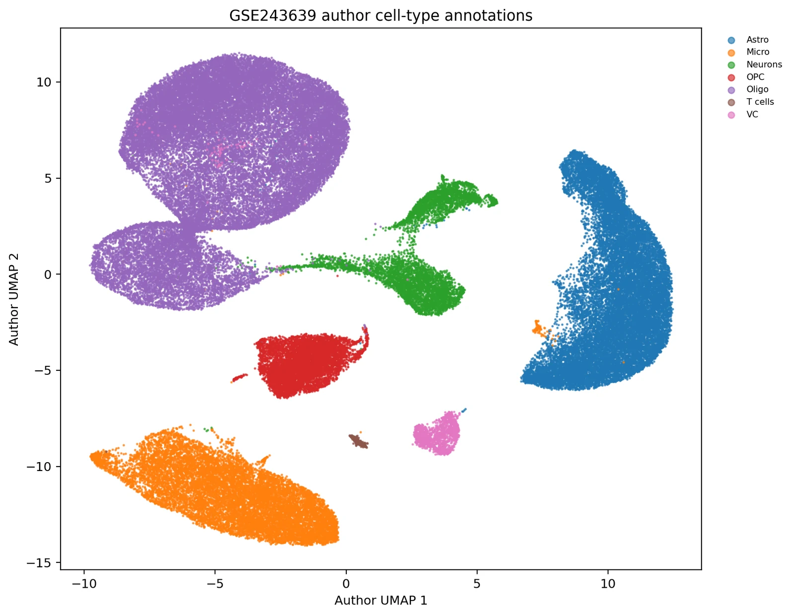
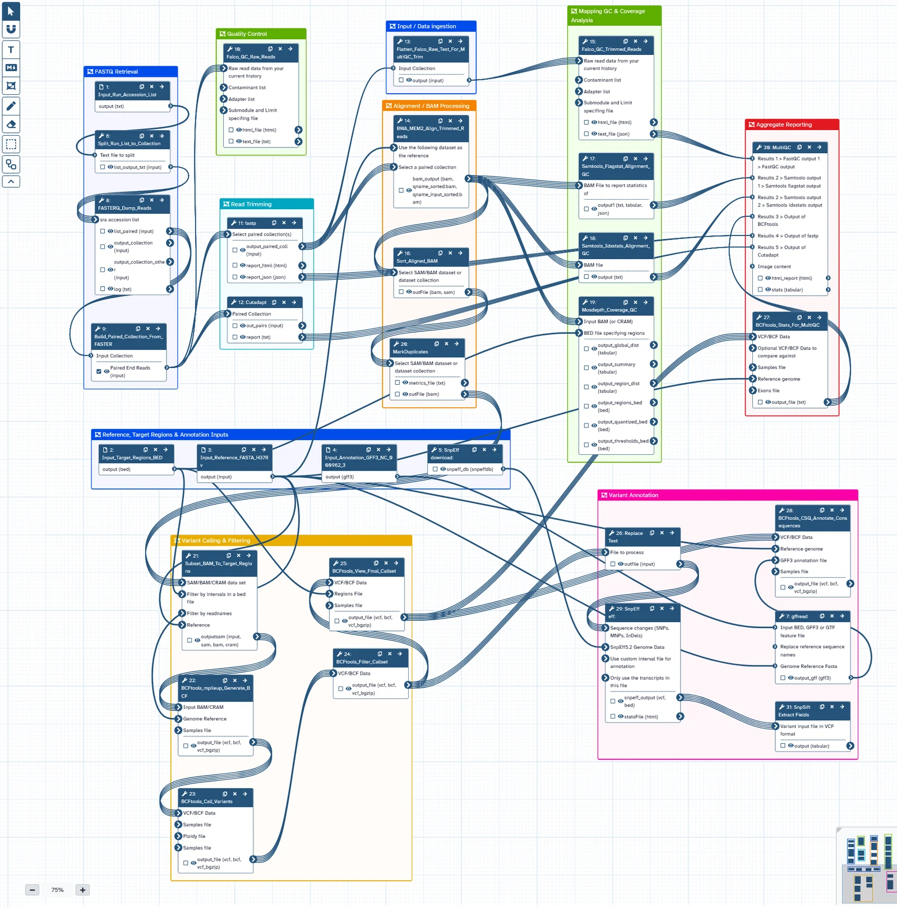
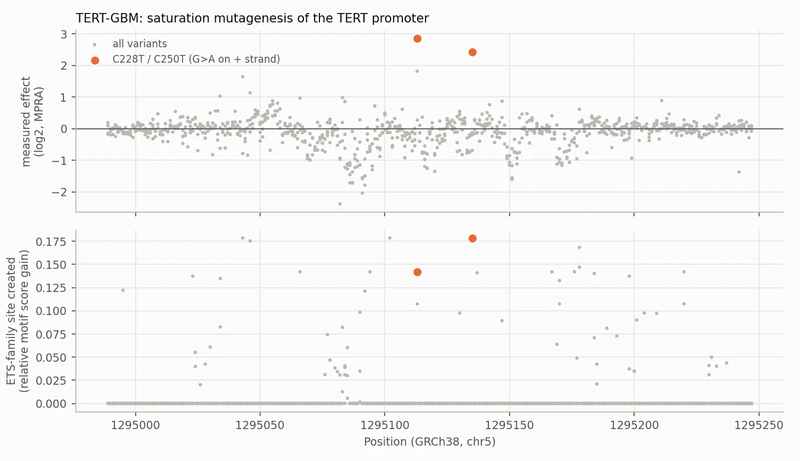

Case studies
Projects
Six bioinformatics projects, each written up as a case study: the question, the approach, the results and their limits. Code for all of them is on GitHub.

MSc dissertation · Statistical genetics
GPNMB and Parkinson’s disease: Mendelian randomisation and colocalisation
Two-sample MR, LD-aware sensitivity analysis and Bayesian colocalisation to test whether genetically predicted GPNMB protein levels are linked to Parkinson’s disease risk. The evidence supports prioritisation, not causality.
Read case study →
Human genetics · Target discovery · Nextflow
Proteome-wide cis-MR and colocalisation scan for Parkinson’s disease
Scaled the dissertation from one protein to a Nextflow pipeline built to test each of the ~2,900 UKB-PPP plasma proteins with cis-pQTL MR and colocalisation, then apply FDR control, evidence tiers and an HTML report.
Read case study →
Single-nucleus transcriptomics · Parkinson’s disease
GPNMB in Parkinson’s disease: snRNA-seq re-analysis
Re-analysed 83,484 substantia nigra nuclei from 29 donors to localise GPNMB and test PD–control differences with donor-level pseudobulk models. GPNMB was highest in microglia and about two-fold higher in PD microglia (P = 0.009), a nominal effect that did not survive transcriptome-wide FDR.
Read case study →
Microbial genomics · WGS
M. tuberculosis WGS variant analysis (Galaxy)
End-to-end Galaxy workflow from SRA reads to annotated resistance variants, run on 6 clinical isolates. It called rpoB and katG mutations, confirmed in IGV, and classified 4 isolates as genotypically MDR-TB.
Read case study →
Transcriptomics · Pipelines
RNA-seq pipeline (Nextflow + Docker)
Samplesheet-driven Nextflow DSL2 pipeline from raw FASTQ to differential expression in one command, with every tool in a versioned container. Validated on real human data: 8 of 8 known dexamethasone-response genes recovered.
Read case study →
Regulatory genomics · Machine learning
RegulonML: regulatory variant effects in unseen promoters and enhancers
Predicted the effects of 41,724 single-base variants in 21 regulatory elements from DNA sequence alone, scoring binding-site gain and loss for 1,019 JASPAR motifs and testing only on loci the model had never seen.
Read case study →Other work
Machine learning, LLMs and data engineering
Mostly course capstones, kept here because they show range. Each links straight to its repository.
LLM · Retrieval-augmented generation
QA bot for documents using RAG
A retrieval-augmented generation system for PDF question answering, covering loading, chunking, embeddings, vector storage, retrieval and answer generation.
View on GitHub ↗Deep learning · Computer vision
Deep learning experiments: Keras vs PyTorch, CNN, ViT
Comparative experiments across CNNs, Vision Transformers and transfer learning for image classification, implemented in both frameworks.
View on GitHub ↗Data engineering
SoftCart data engineering platform
End-to-end e-commerce data platform: SQL/NoSQL ingestion, dimensional warehouse design, ETL automation, PostgreSQL analytics with 300,000 fact rows, BI reporting and Spark.
View on GitHub ↗Machine learning · Clustering
Customer segmentation (unsupervised learning)
Segmented 7,043 telecom customers with K-Means, hierarchical clustering and DBSCAN, finding a high-risk segment with ~42% churn against ~14% in the most stable group.
View on GitHub ↗Get in touch
I’m looking for bioinformatics roles in statistical genetics, transcriptomics and NGS analysis, especially where clinical or cell and gene therapy experience helps. Based in London, open to hybrid and remote.